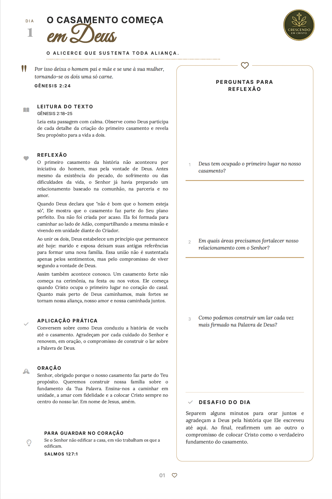
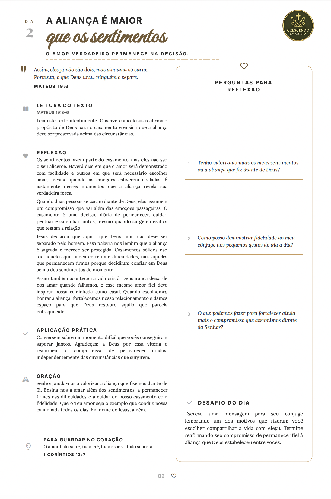
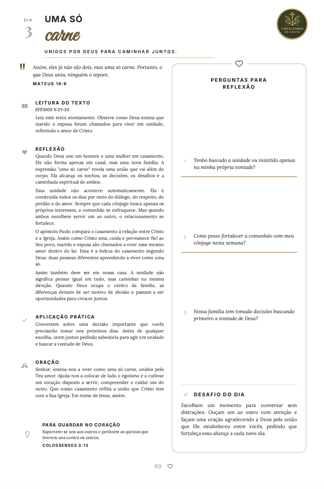
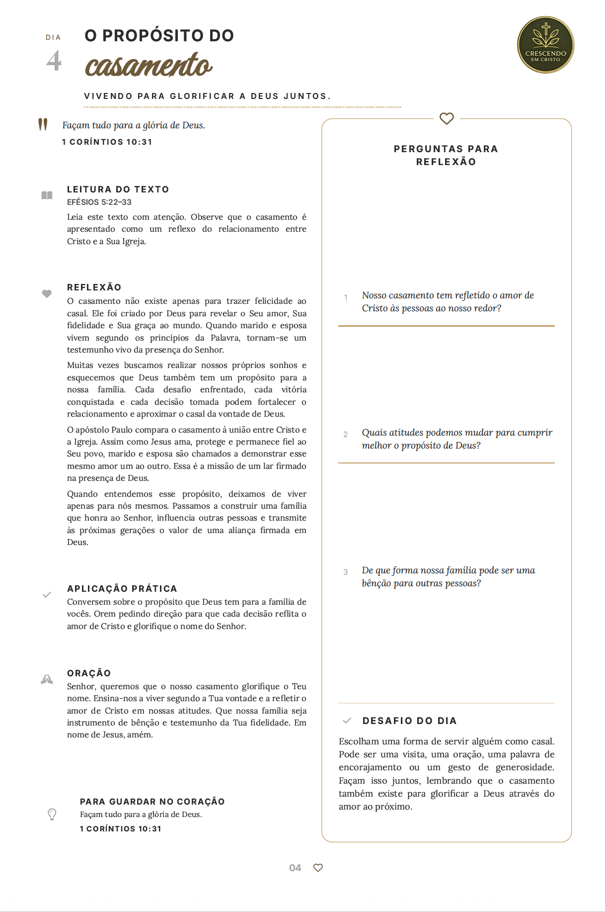

O desgaste emocional causado pela rotina e pela falta de momentos profundos a dois.
Livro Digital em PDF
Fortaleça seu casamento em 10 minutos por dia.
Receba um guia prático com mais de 100 devocionais diários, desenvolvidos para blindar sua relação, gerar conexão e trazer Deus para o centro da sua união.
- +100
- Devocionais
- Alta Qualidade
- 7 Dias
- De Garantia
Acesso Imediato
Fortalece o Relacionamento
Leitura Prática a Dois
Baseado na Palavra de Deus
Perguntas para Reflexão
Desafios Diários
O Problema
A rotina e o cansaço estão afastando os casais de Deus e um do outro.
Muitos casamentos começam cheios de propósitos, mas com o passar do tempo, a correria do dia a dia, a falta de diálogo e o distanciamento espiritual acabam esfriando a relação.
A dificuldade de criar um hábito de ler a Bíblia e orar juntos de forma consistente.
Pequenos desentendimentos diários que poderiam ser evitados com Deus no centro.
A Solução (O que vem no livro)
Um material completo e guiado para reconectar vocês.
Leituras Profundas
Mais de 100 temas diários abordando comunicação, perdão, finanças e intimidade, tudo baseado nas Escrituras.
Aplicação Prática
Cada devocional possui perguntas reflexivas para promover diálogo de qualidade entre o casal logo após a leitura.
Desafio do Dia
Pequenas ações sugeridas em cada capítulo para vocês colocarem o amor em prática diariamente.
Como funciona
Um passo a passo simples para reacender a chama.
Compre Online
Pagamento seguro e liberação imediata do arquivo.
Receba o PDF
Baixe no celular, tablet, computador ou imprima em casa.
Escolha o Horário
Separe 10 a 15 minutinhos, seja pela manhã ou antes de dormir.
Orem Juntos
Façam as leituras, conversem e fortaleçam sua aliança.
A Escolha
A diferença aparece na qualidade da relação.
Ignorar o problema
Deixar a rotina vencerAcumular frustrações, falta de comunicação e esfriamento espiritual, levando a um casamento desgastado e cheio de atritos.
O Caminho da Restauração
Apenas R$ 14,90Um pequeno investimento para ter em mãos um manual guiado por Deus que vai trazer amor, paz e união para a sua casa todos os dias.
Design Premium e Leitura Agradável
O material foi desenvolvido pensando na melhor experiência de leitura. Fontes legíveis, respiros visuais elegantes e uma estruturação perfeita para que o seu momento com Deus seja sereno e proveitoso.
Por dentro do material
Veja como é o livro por dentro




Depoimentos
O que os casais estão dizendo

Oferta Especial
Comece a transformar seu lar agora.
O acesso é enviado no seu e-mail imediatamente após a confirmação. Baixe, abra no celular e já comecem a ler hoje mesmo.
Acesso Vitalício
Promoção termina em
12:00
Livro Digital: Devocional para Casais
- Arquivo PDF pronto para uso em qualquer tela
- Versão em alta resolução para impressão
- Mais de 100 temas aprofundados
- Desafios e Orações Guiadas
- Garantia Incondicional de 7 Dias
De R$ 49,90 por
R$ 14,90
QUERO GARANTIR MEU ACESSO
Pagamento seguro · Acesso Imediato · Único pagamento
Dúvidas Frequentes
Ainda não tem certeza? Nós respondemos.
O material é físico ou digital?
O devocional é 100% digital. Você receberá o arquivo em formato PDF, que poderá ser lido no celular, tablet, computador ou, se preferir, poderá ser impresso na sua casa ou gráfica.
Serve para casais de namorados ou noivos?
Sim! Os princípios bíblicos são universais e a leitura durante o namoro e noivado ajuda a estabelecer os alicerces de Deus para o futuro casamento.
Como vou receber o arquivo?
Logo após a aprovação do pagamento, você receberá um e-mail com o link direto para baixar o arquivo original.
E se eu não gostar?
Nós oferecemos 7 dias de garantia incondicional. Se você achar que o material não abençoou a vida de vocês, basta enviar um e-mail solicitando o reembolso do seu dinheiro.